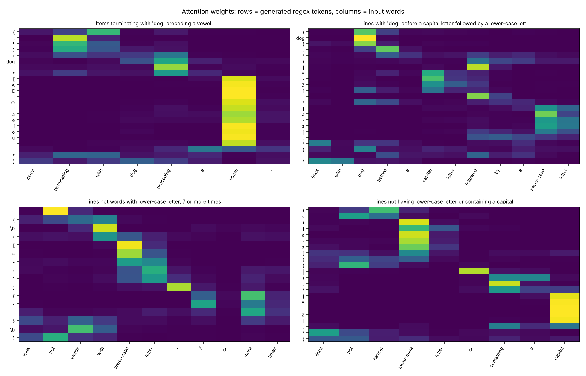

NLP course project · Encoder-decoder text generation
From English to regular expressions
An encoder-decoder with attention, built from scratch in PyTorch
English
lines containing the string ‘dog’ at least 2 times
Regular expression
.*(dog){2,}.*
Mohamed Ali Aoun
The task
Describe the lines in English, get the regex
lines with ‘dog’ before a capital letter followed by a lower-case letter
(dog).*([A-Z].*[a-z].*).*
lines not words with lower-case letter, 7 or more times
~(\b([a-z]){7,}\b)
Items with a numeral or an upper case letter at least five times.
(([A-Z])|([0-9])){5,}
A sequence-to-sequence problem: one token sequence in, another out. The regex has to match whole lines, and the model has no pretrained weights.
2 · The task
Dataset: NL-RX-Turk
10,000 descriptions paired with regexes
9,999
unique pairs after removing one duplicate
94.5%
of test regexes never appear in training
467 / 43
source words and target tokens in the vocabularies
Random split, seed 42: train, validation, test
Train 8,001
Val 999
Test 999
Source: Locascio et al., 2016, github.com/nicholaslocascio/deep-regex (MIT license). Quoted words in the descriptions (‘dog’, ‘truck’, ‘ring’, ‘lake’) are placeholders shared with the regex.
3 · Dataset
Preprocessing
Words in, characters out, four reserved tokens
Input: the description
- Lowercase, quotation marks removed
- Word tokens, punctuation split off
- Vocabulary from the training set only: 467 words
- 0.18% unknown words in the test set
Output: the regex
- Every regex character is one token
- \b and the placeholders dog, truck, ring, lake are single tokens
- 43 tokens in the vocabulary
- Longest regex has 52 tokens, nothing is truncated
<PAD>
padding, masked in attention and ignored by the loss
<UNK>
any word that is not in the vocabulary
<SOS>
first input of the decoder, starts the regex
<EOS>
predicted when the regex is complete, stops decoding
4 · Preprocessing
Architecture
An LSTM encoder-decoder with a bridge
Encoder
Input words
tokens of the description
Embedding
467 × 128
LSTM
1 layer, 256 units
Final state
hidden and cell
Bridge: a linear layer and tanh turn the final state into the decoder’s start state
Decoder
Previous regex token
Embedding
43 × 128
LSTM
256 units
Linear + softmax
43 tokens
Next regex token
stops at <EOS>
Baseline: the decoder only sees the final state. Parameters: 998,443 for the baseline, 1,408,683 with attention.
5 · Architecture
The improvement: attention
The decoder looks back at every input word
1
Score
How relevant is each input word to the next output token?
score = v^T tanh(W_s s + W_h h_i)
2
Weights
Softmax over the input positions. Padding gets zero weight.
3
Context
Weighted sum of the encoder states, fed to the LSTM and to the output layer.
Why one vector is not enough
Without attention, 256 numbers must carry the whole description, and every regex token depends on that single summary.
20% vs 0%
validation exact match after 2 epochs, with and without attention
6 · Attention
Training setup
Trained on a CPU in 13 to 37 minutes
Model
| Setting | Value |
|---|---|
| Embedding size | 128 |
| Hidden size | 256 |
| Layers | 1 LSTM layer |
| Dropout | 0.2 (0.3 for the best model) |
| Parameters | 998k, 1.41M with attention |
Optimisation
| Setting | Value |
|---|---|
| Loss | Token cross-entropy, padding ignored |
| Optimiser | Adam, learning rate 0.001 |
| Schedule | Halved after 2 epochs without gain |
| Batch size | 64 |
| Epochs | Up to 30 (20 for the best model) |
| Teacher forcing | Ratio 1.0, 0.5 tested |
| Stopping | Best validation exact match |
7 · Training
Evaluation
Exact match is strict, so we also test behaviour
Exact match
The generated string is identical to the reference. Strict: equivalent regexes written differently count as wrong.
Functional accuracy
Same accept and reject decisions as the reference on about 600 probe strings, using our own matcher for the & and ~ operators.
BLEU-4
N-gram overlap on regex tokens. Smooth, so it rewards near misses.
Perplexity and token accuracy
Teacher-forced diagnostics that compare models independently of decoding.
Caveat: some reference regexes accept nothing, so a prediction that also accepts nothing counts as equal. We also report the non-degenerate subset (60.8% for the best model).
8 · Evaluation
Results on the test set
Attention adds 7 to 9 points of exact match
| Model | Params | Exact match (%) | Functional (%) | BLEU-4 |
|---|---|---|---|---|
| LSTM baseline, 30 epochs | 998k | 32.2 | 55.0 | 81.7 |
| LSTM baseline, 60 epochs | 998k | 34.1 | 56.4 | 82.3 |
| + attention | 1.41M | 41.2 | 62.4 | 84.8 |
| + bidirectional encoder | 2.27M | 40.8 | 63.6 | 83.9 |
| + teacher forcing 0.5 | 1.41M | 40.8 | 61.1 | 85.1 |
| + extra data, more dropout (best) | 1.41M | 45.3 | 65.1 | 85.4 |
999 test examples, greedy decoding. Baseline (30 epochs) and attention: mean of two seeds. Other rows: one run. Each row after the baseline changes one thing relative to the attention model.
9 · Results
What helped
Attention and more data helped, the rest did not
+7 to +9
points of exact match from attention, on two seeds, even against a baseline trained twice as long
+4
more points from the extra templated descriptions of the training regexes plus stronger dropout (one run)
+1.2
functional points from a bidirectional encoder, for 60% more parameters: within the noise of one seed
93.3%
valid regexes with teacher forcing 0.5, against 99.8% with full teacher forcing, and no accuracy gain
±1
point from beam search in either direction; it only removes invalid outputs (100% valid)
10 · What helped
Training curves
Attention converges much faster than the baseline

After 2 epochs: 20% validation exact match with attention, 0% without.
The baseline overfits more: loss gap of 0.15 after 60 epochs.
Attention: validation loss flat after about 10 epochs, gap 0.06 to 0.09.
11 · Training curves
Attention heatmaps
Each regex token looks at the right words

the word “vowel”
[AEIOUaeiou]
“7 or more times”
{7,}
the word “not”
~
the word “dog”
dog
12 · Attention heatmaps
Generated examples, best model
What it gets right and what it gets wrong
Correct (exact match)
lines with ‘dog’ before a capital letter followed by a lower-case letter
(dog).*([A-Z].*[a-z].*).*
lines not words with lower-case letter, 7 or more times
~(\b([a-z]){7,}\b)
Items with a numeral or an upper case letter at least five times.
(([A-Z])|([0-9])){5,}
Wrong (reference vs generated)
no lines containing the string ‘dog’ or a capital letter
ref .*(~(dog))&([A-Z]).*
out .*(dog)|([A-Z]).*
lines which do not contain the string “dog” or a vowel or a letter
ref ~((dog)&([AEIOUaeiou])&([A-Za-z]))
out ~(((dog)|([AEIOUaeiou]))|([A-Za-z]))
lines containing a character followed by a number, 6 or more times
ref (.).*(([0-9]){6,}).*
out (.*..*[0-9].*.*){6,}
13 · Examples
Error analysis, best model
Failures are semantic, not syntactic
Outcome of the 999 test examples
453
197
348
Exact match, 453
Equivalent, written differently, 197
Valid but wrong, 348
Invalid regex, 1
| Reference contains | n | Exact (%) | Functional (%) |
|---|---|---|---|
| Negation (~) | 154 | 42.2 | 55.2 |
| Word boundary (\b) | 194 | 39.2 | 58.2 |
| Alternation (|) | 368 | 48.1 | 60.9 |
| Repetition ({n,m}) | 213 | 52.6 | 67.1 |
| Intersection (&) | 271 | 45.8 | 71.6 |
| All test examples | 999 | 45.3 | 65.1 |
Why it fails
- “not X or Y” has two readings, and the description rarely says which
- Noisy paraphrases, with typos and odd wording
- Dataset convention: ~(dog) matches any line that is not exactly “dog”
- 94.5% of test regexes are new combinations
14 · Error analysis
Limitations and next steps
What this study cannot say, and what comes next
Limitations
- Functional accuracy is a sampling test on about 600 strings, not a proof of equivalence
- Two seeds for the main comparison and one for the variants, so small gaps are noise
- Our scores are not directly comparable with the paper’s DFA-based accuracy of 58.2%
- Negation and grouping stay hard
Next steps
- Exact DFA equivalence as the metric
- Syntax-aware decoding: balanced parentheses and operator scope, or a tree decoder
- A Transformer encoder-decoder for comparison
- Seed ensembles and more paraphrase data
15 · Limitations
Live demo
Type English, get a regex
$ python src/demo.py --run results/lstm_attn_aug_s1
English> lines containing the string 'dog' at least 2 times
Regex : .*(dog){2,}.*
English> lines that start with a capital letter and end with a number
Regex : (([A-Z])(.*))&((.*)([0-9]))
English> lines with a vowel before a digit
Regex : ([AEIOUaeiou]).*([0-9]).*
The demo also marks which of your own test lines match, using our matcher for the & and ~ operators, and can save the attention heatmap. Outputs shown are real runs of the best model.
16 · Demo
Conclusion
A small LSTM with attention learns to write regexes from English
+7 to +9
points of exact match from attention over the baseline
45.3%
exact match, and 65.1% functional accuracy, for the best model
Next
structure-aware decoding for negation and grouping
Questions?
17 · Conclusion